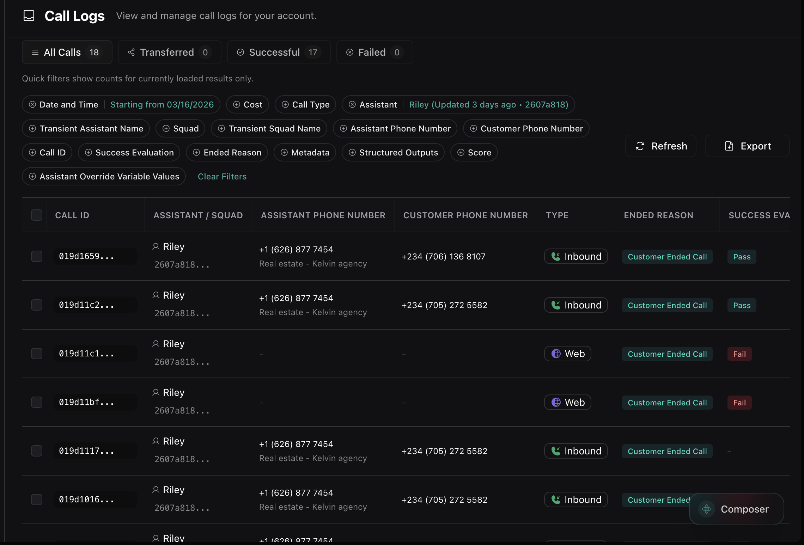
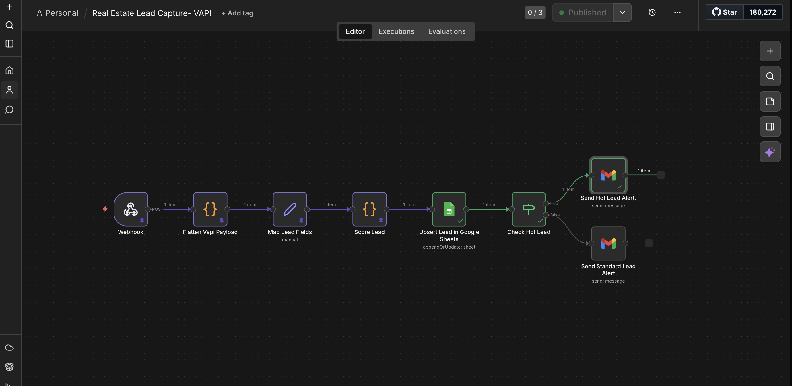
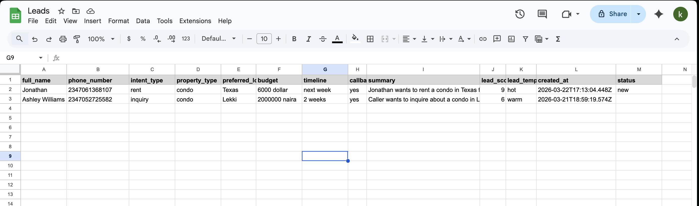
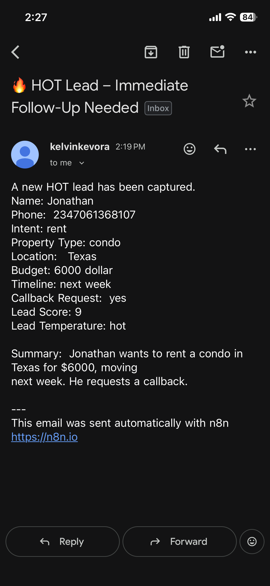

An AI-powered voice workflow that answers inbound real estate calls, captures structured lead data, prevents duplicates, scores urgency, and routes high-intent prospects instantly.
This project is an end-to-end AI automation system built for real estate lead capture. It answers inbound calls with a voice assistant, extracts structured buyer details, scores lead quality, stores the result in Google Sheets without duplication, and alerts agents when the lead is urgent enough to deserve immediate follow-up.
The workflow was designed to feel production-ready while staying lightweight. Instead of a custom backend, it uses Vapi for voice interaction, n8n Cloud for orchestration, Google Sheets as a simple CRM layer, and Gmail for conditional notifications.
Core principle: use voice AI to collect information naturally, but keep the qualification, normalization, deduplication, scoring, and routing logic explicit so the workflow stays reliable.
Real estate agencies regularly miss or delay inbound leads because calls are not captured, structured, or prioritized consistently. Serious prospects often depend on how quickly a team responds, yet many agencies still rely on manual note-taking or unstructured follow-up.
Real estate calls are often high-value moments because the prospect is already willing to talk. That made inbound call automation a stronger opportunity than form-only capture.
The assistant needed to extract structured details such as name, budget, location, timeline, and callback preference, not just produce a transcript. That shaped the Vapi assistant prompt and output schema from the beginning.
Phone numbers and payload formats were normalized before any dedupe or storage step. This was critical because small formatting differences created duplicate records and unreliable matching.
Lead temperature was determined by clear business rules instead of vague model inference. Budget, urgency, and callback intent became strong signals for deciding whether an agent should be alerted immediately.
Google Sheets was enough to prove the workflow end to end. It kept the prototype simple while still supporting append-or-update behavior and structured lead storage.
Vapi handles the inbound call experience and collects buyer intent through conversation. The call assistant captures structured outputs rather than leaving the workflow to parse everything from a raw transcript later.

The n8n workflow receives the structured voice payload, flattens the data, maps lead fields, calculates lead score, writes the lead into Google Sheets, and branches into separate email alerts based on lead temperature.

Leads are stored in Google Sheets as a lightweight CRM. The workflow uses phone number normalization and append-or-update logic so the same caller is not added repeatedly with slightly different formats.

Once the lead is scored, hot prospects trigger immediate email alerts to the team. The goal is not just to record the lead, but to shorten the time between capture and meaningful follow-up.

This was a personal, portfolio-focused project built end to end. I designed the automation architecture, implemented the workflow, defined the scoring and deduplication logic, and integrated the voice, spreadsheet, and alerting layers.
This project reinforced how much automation reliability depends on normalization, clear branching rules, and testing with real-world payloads instead of idealized mocks. It also showed that a small tool stack can still deliver a production-style workflow when the logic is well structured.
Key takeaway: strong automation systems are not just about connecting tools. They depend on careful data handling, explicit decision logic, and fast feedback loops while debugging.